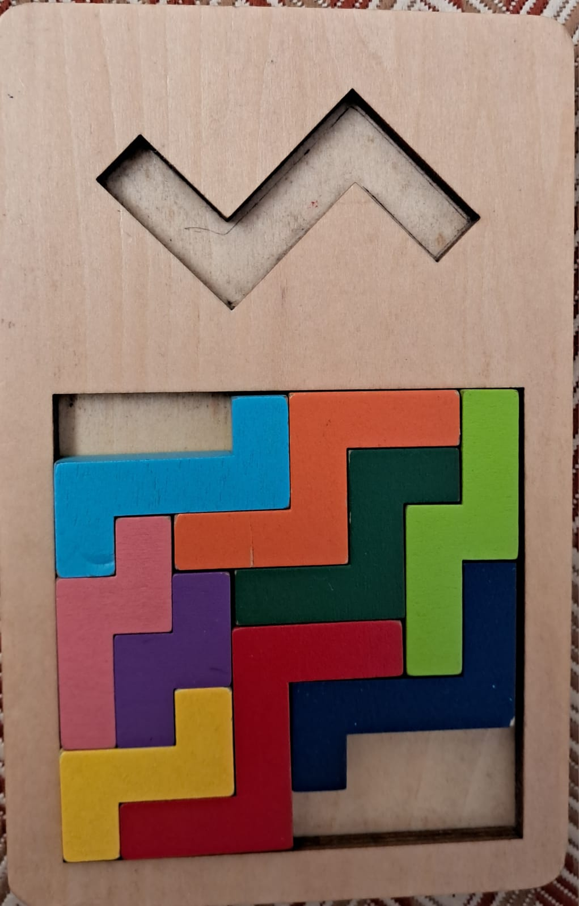
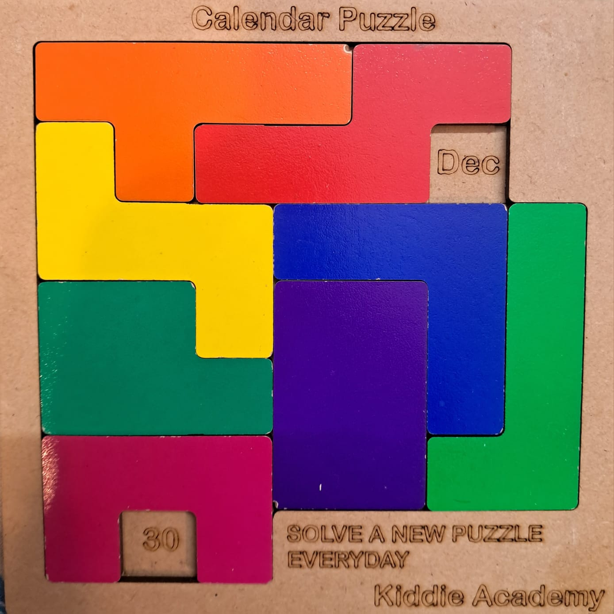
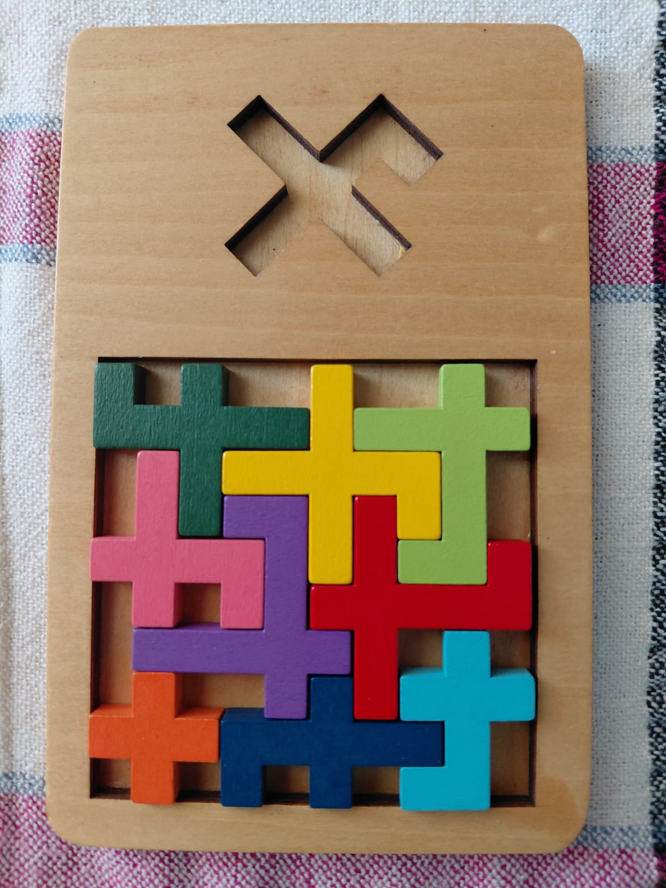

The pentomino puzzle, and how AI helped me solve it

A pentomino is five squares joined edge to edge — and there are exactly twelve.
Two squares make a domino; five make a pentomino. Ignore rotations and mirror images and there are exactly twelve, each named for the letter it resembles — F, I, L, N, P, T, U, V, W, X, Y, Z. The classic challenge: fit all twelve into one rectangle, with no gaps.
“HELP! I Am a Pentomino Addict.”Arthur C. Clarke · 1975
Arthur C. Clarke played it on his palm, all the way across the city.
The author of 2001: A Space Odyssey was a self-confessed addict. It made the perfect travelling companion — no board needed, just the twelve shapes held in his head. On a train, a bus, the metro, he would trace and re-trace them on his palm and lose whole journeys to it, never noticing the stops go by.

Thousands of right answers — and the last two pieces still betray you.
Here is one solution. The 6 × 10 board has 2,339 of them in all — yet they are buried among billions of wrong arrangements. Pieces slot together beautifully until the final two refuse to fit and you unravel half the board. Always one move from triumph, one from starting over — which is exactly why it is impossible to put down.
My dad doesn’t just play it — he solves it. And now, so does my daughter.
For my dad it is a lifelong habit. He actually solves these — and most weeks a photo of a finished board lands in our family WhatsApp group, pieces packed edge to edge, almost as a quiet flex. Lately he has been passing it on: teaching my daughter the shapes, the two of them hunched over the same tray until she can place the tricky pieces herself. She loves it now as much as he does — an obsession handed down a generation.


Same twelve pieces. Four different boards. Thousands of ways each.
Sixty squares rearrange into four perfect rectangles — 6 × 10, 5 × 12, 4 × 15, and 3 × 20. Each is its own puzzle with its own number of solutions, from a comfortable 2,339 down to the brutal 3 × 20, which has just two. Same pieces, wildly different difficulty.
This is how the computer thinks: try, fail, take it back, try again.
Watch the board fill. The solver drops a piece into the first empty cell, then the next — and the moment nothing fits, it calmly takes the last piece back and tries another. That single move, undoing a step to explore a different one, is recursion. The machine just does it a few billion times without ever getting bored.
For years I couldn’t finish this. This time, I just described it.
The idea was never the problem; getting every moving part right was. I had started this solver more times than I can count and always abandoned it. This time I wrote down what I wanted in plain English, handed it to an AI inside my editor, and the code I could never quite finish simply took shape.




One rectangle is just the start — a whole family of these puzzles is waiting.
The 6 × 10 board is the famous one, but it is only the opening move. There is a 13-piece square variant, a tray shaped like a mountain instead of a rectangle, a calendar puzzle that hides a different date every day, and boards made entirely of plus-shaped pieces. Same idea, different constraints — each one its own little combinatorial world.
So the next job for this little solver is obvious: teach it the rest. Arbitrary board shapes, custom piece sets, fixed cells that must stay uncovered. Same backtracking heart, more puzzles it can answer — including, hopefully, whichever one my dad sends next.